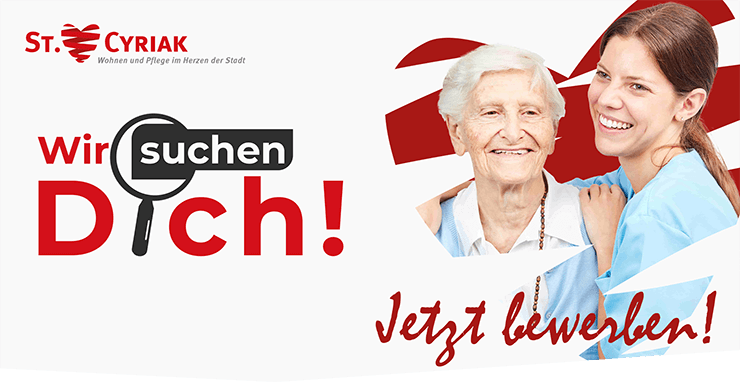

Beruf & Ausbildung
Der Umgang mit Menschen ist Dir eine Herzensangelegenheit? Du willst „Gutes tun“ und darin einen Wert schätzen? Melde Dich bei uns!
Wir bilden Dich nicht nur aus, sondern geben dir fundierte Rahmenbedingungen, so dass Du bald als Pflegehelfer oder Pflegefachkraft verantwortungsvoll mit den Werten des Menschen bewusst umgehen und fühlen kannst.
Wir suchen Dich!
Wir suchen ab sofort einen Pflegehelfer (w/m/d) in Teilzeit 40–70% anteiligem Beschäftigungsumfang
Wir wünschen uns von Ihnen:
- Flexibilität
- Bereitschaft zu Feiertags- und Wochenendarbeit
- Erfahrung in der Grundpflege
- erste Erfahrungen im Nachtdienst
Wir bieten Ihnen:
- ein verantwortungsvolles und vielseitiges Aufgabengebiet
- Vergütung nach AVR Caritas mit betrieblicher Altersvorsorge (ZVK)
- eine gut ausgestattete Arbeitsumgebung
- Fort- und Weiterbildungen
- Wertschätzende von Respekt geprägte Zusammenarbeit im gesamten Team
- Unterstützung bei der Wohnungssuche
- Bikeleasing
- und vieles mehr
Die Stelle weckt Ihr Interesse? Dann schicken Sie Ihre Bewerbung an:
St. Cyriak Wohnen und PflegeAm Kirchberg 6
78120 Furtwangen
Nicola Passow
Pflegedienstleitung
Telefon: 07723 9304–456
E-Mail: PDL@st-cyriak.de
Jede helfende Hand zählt!
Es gibt viele Möglichkeiten sich ehrenamtlich zu engagieren – Sie entscheiden!
Hier einige Vorschläge:
- Besuchsdienst bei Bewohnern
- Ihre kreativen Gruppenangebote
- Mithilfe bei Veranstaltungen
- Singen und Musizieren
- Spaziergänge
- Begleitung zu Gottesdiensten
- Vorlesen
Wir brauchen Ihre Unterstützung!
* Das Ehrenamt ist keine Arbeit, die nicht bezahlt wird. Es ist Arbeit, die unbezahlbar ist. *
Lust auf ein Ehrenamt? Dann wenden Sie sich gerne an:
Nicola PassowPflegedienstleitung
Tel: 07723 9304–456
E-Mail: PDL@st-cyriak.de
Wir suchen Dich!
Wir suchen Auszubildende zur Pflegefachkraft (w/m/d)
Wir erwarten von Dir:
- Mittlere Reife oder vergleichbaren Bildungsabschluss
oder Hauptschulabschluss und einen Abschluss in der Kranken-/Altenpflegehilfe
oder Hauptschulabschluss und eine mindestens 2-jährige abgeschlossene Berufsausbildung - Interesse am Thema Medizin und Gesundheit
- Freude am Umgang mit Menschen aller Altersstufen
- Verantwortungsbewusstsein
- Teamgeist
- Flexibilität
Wir bieten Ihnen:
- eine krisensichere Ausbildung
- ein motiviertes Team
- eine gut ausgestattete Arbeitsumgebung
- ein hauseigenes Skills-Lab (Ausbildungsstützpunkt) mit der Möglichkeit, dein theoretisches und praktisches Wissen vertiefen und erweitern zu können.
- eine gute Vernetzung mit allen an der Ausbildung beteiligten Ausbildungsstellen
- eine strukturiert geplante Ausbildungszeit mit Vertiefungseinsätzen in anderen Einrichtungen (u.a. in der Kinderkrankenpflege, psychiatrische und ambulante Versorgung)
- eine attraktive Ausbildungsvergütung nach der AVR Caritas
- Angebote zur betrieblichen Gesundheitsförderung
Wenn Du dich angesprochen fühlst und dich für die Ausbildung interessierst, dann sende deine Bewerbung an:
St. Cyriak Wohnen und PflegeAm Kirchberg 6
78120 Furtwangen
Nicola Passow
Pflegedienstleitung
Tel: 07723 9304–456
E-Mail: PDL@st-cyriak.de